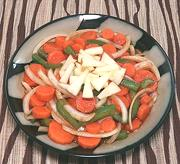

|
Copper Penny SaladSouth Africa & elsewhere | ||||
| Makes: Effort: Sched: DoAhead: |
1-1/2# ** 3+ hrs Best |
Possibly originally from South Africa, and popular there, to the rest of the English speaking world it is a "grandmother dish". Usually a cold salad, but sometimes a warm side dish. | |||
|
|
1 4 4 ------ 4 2 1/4 1/4 2 1 1/2 1/2 1/4 ------ |
# oz oz --- oz T c c T t t t t --- |
Carrots Onion Bell Pepper, grn -- Dressing Tomato Sauce (1) Water Vinegar, white wine Olive Oil, ExtV Sugar (2) Worcestershire Dijon Mustard Salt Pepper -------------- |
Make - (40 min + 2-1/2 to 12 hrs cool & chill)
|
qgv_carrot2 210516 sausa103 & inet var -
www.clovegarden.com
©Andrew Grygus -
agryg@aaxnet.com - Linking to and non-commercial use of this page is
permitted.